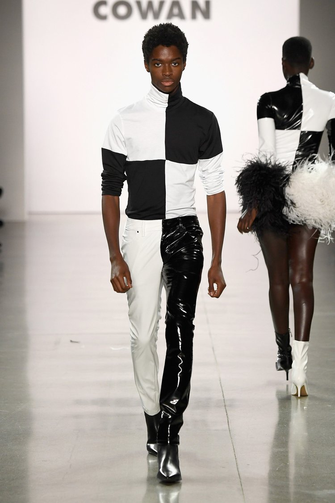
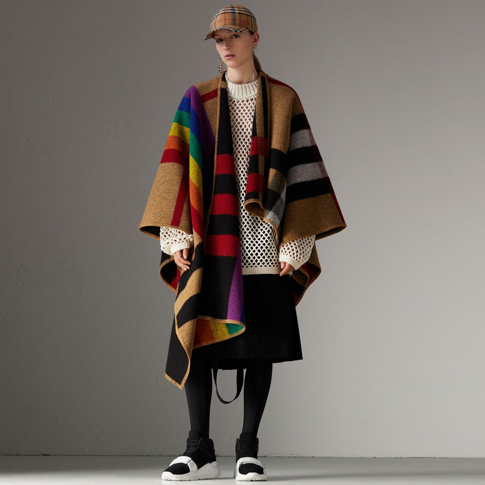
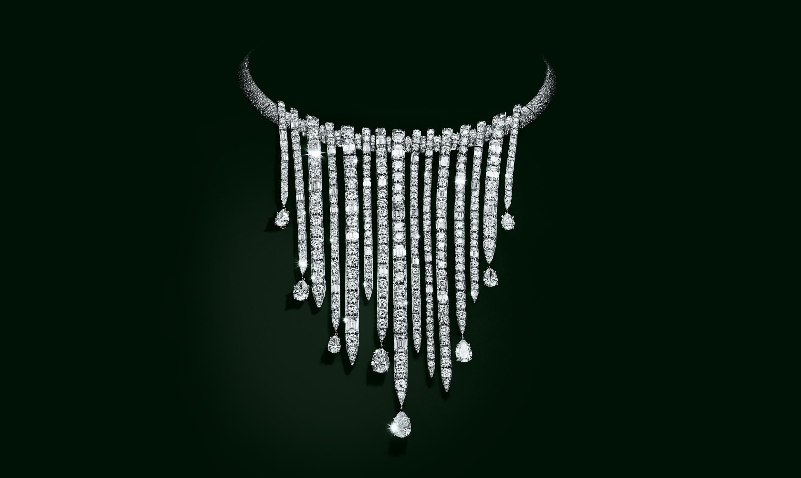
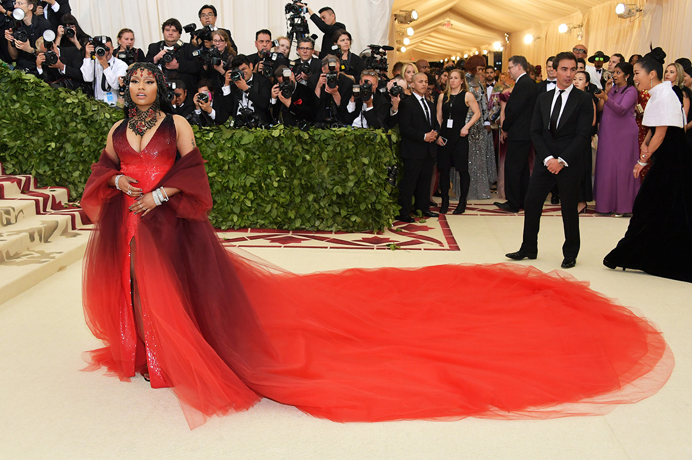

Christian Cowan
Quotes from Christian Cowan's website!
"With a youthful take on how the modern day women can dress, Christian Cowan uses his lively spirit and creative prowess in making his standout designs. With an affinity for unique materials such as vinyl, feathers, mesh, and sequin – Christian Cowan takes classic silhouettes and transforms them into something truly head turning. Having graduated from Central Saint Martins and London College of Fashion in 2016, Christian garnered a strong celebrity following before having even left school. Lady Gaga was the first to support the young designer, stepping out in a full pink glitter suit in 2014. Since then, Christian has continued to outfit the world’s biggest stars such as Beyoncé, Miley Cyrus, Nicki Minaj, and Naomi Campbell. Most notably perhaps, is Cardi B in a full look on the cover of her debut album ‘Invasion of Privacy’. Christian Cowan shows during New York Fashion Week and was a finalist for the 2018 CFDA/Vogue Fashion Fund."
Burberry
Burberry Behind-the-Scenes
Quote from Burberry's Website!
"Burberry strives to ensure that processes for hiring, developing and promoting employees are fair and that women have the opportunity to be represented at every level of the organisation. As of 31 March 2017, out of the global employee population of over 10,000, approximately 70 per cent were female and 30 per cent male, with women occupying 39 per cent of senior management roles. Supporting the importance of diversity in business and society, in 2015 Burberry became a corporate member of OUTstanding, a UK not-for-profit professional network of lesbian, gay, bisexual and transgender executives."
Tiffany & Comapny
Quote from Tiffany's Website!
"It was Tiffany & Co. that introduced major gemstones to the United States in 1848, a debut that earned Charles Lewis Tiffany the moniker “King of Diamonds.” Soon thereafter he unveiled the Tiffany Diamond, one of the largest and finest fancy yellow diamonds in the world. And in 1887, Tiffany again made headlines when, in one of the world’s most shocking retail coups, he purchased the French Crown Jewels. This feat established Tiffany & Co. as the home of the finest diamonds on the face of the earth, and so it remains today."
Oscar De La Renta
Nicki Minaj Met Gala
Quote from Oscar De La Renta's website!
"Nicki Minaj wore a custom Oscar de la Renta liquid dégradé red sequin gown with a multi-layered hand dip-dyed tulle coat to the 2018 Met Gala."
Tiffany & Co. November 29, 2018
Burberry November 29, 2018
Christian Cowan November 29, 2018
Christian Cowan November 29, 2018
Oscar de la Renta November 29, 2018
Quotes from:
Oscar de la Renta November 29, 2018
Christian Cowan November 29, 2018
Tiffany & Co. November 29, 2018
Burberry November 29, 2018